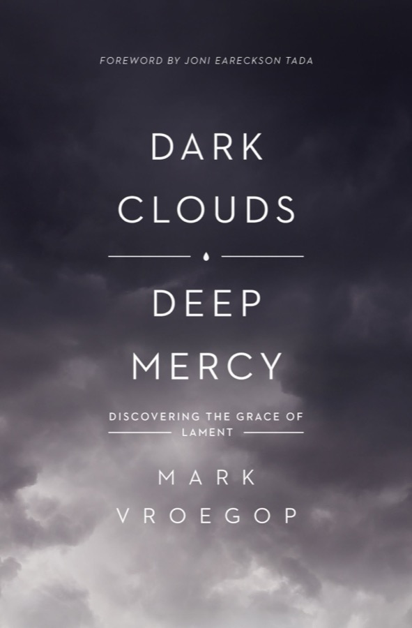

In 2004, days before her due date, Sarah Vroegop's baby stopped moving. Their daughter Sylvia was stillborn. Miscarriages and a "false positive" pregnancy followed. Mark, a pastor, discovered that a third of the Psalms gave him words his church mostly didn't sing: lament. This book teaches it as a learnable prayer in four movements, then reads Lamentations for what lament teaches, and ends with how to practise it alone and together.
The core idea
Nobody taught you to cry; it was your first sound. But lament has to be learned, because every lament is a prayer, and a statement of faith. You would not complain to God about His absence unless you believed He is powerful, good and faithful. Lament "stands in the gap between pain and promise."
Lament is a prayer in pain that leads to trust.Vroegop's definition
He sees most hurting Christians fall into one of two ditches: anger that hardens into bitterness or even unbelief, or a stoic denial ("everything's fine") that feels pious but isn't honest. Lament is the third way. It also exposes how badly churches handle grief: people told him "I'm sure the Lord will give you another baby" or "the Lord must know He can trust you with this." Well meant, and no help. Funerals have become "lament-lite," and under 5% of the contemporary worship songs he surveyed in 2016–17 were laments, even though at least a third of the 150 Psalms are.
Hard is hard. Hard is not bad.
Part 1 · Learning to lament
Most biblical laments follow the same path: an address to God, a complaint, a request, and an expression of trust. Vroegop turns them into four verbs, each taught from one psalm. Tap a movement.
When you don't know what to ask for, these are the requests the psalmists make.
Your own lament
This is Vroegop's worksheet from appendix 3: pick a psalm, read it for the four movements, then write your own in each box. Saved only on this device.
— yet —
Part 2 · Learning from lament
Jeremiah wrote Lamentations over the ruins of Jerusalem after Babylon's three-year siege and the burning of the temple in 586 BC. In Hebrew the book's title is its first word: "How?" Chapters 1–2 and 4 are acrostics, suffering "from A to Z"; chapter 3 intensifies into a triple acrostic; chapter 5 breaks the pattern and ends unresolved. Vroegop calls it a memorial, like the black granite of the Vietnam wall: lament is not only an expression of sorrow but a record of lessons not to forget.
"The heart of the wise is in the house of mourning" (Ecclesiastes 7:4). Funerals stop the merry-go-round and teach. Lamentations names the cause of Jerusalem's fall plainly: sin, and God's judgment through Babylon. Vroegop is careful: not every suffering is caused by your specific sin. But every death, war, injustice and tear exists because the world is fallen. He told his eleven-year-old daughter, who asked why Sylvia had to die, both things: we don't know God's reason, and Sylvia died because we live in a broken world that needs Jesus to make it right.
Two more lessons: my pain is not the only pain (lament widens the heart to your city and nation; "we watch the news so we know how to lament"), and lament awakens the soul. One man who spent a week lamenting sin found that temptations lost their shine.
"His mercies are new every morning" was not written over a pastel cottage by a stream, as on the painting Vroegop saw at a conference centre, but over a war zone, "Indonesia after a tsunami." The chapter swings from "my endurance has perished, so has my hope" (v. 18) to "you have taken up my cause, O Lord" (v. 58). The hinge is verse 21: "But this I call to mind, and therefore I have hope." Nothing in the circumstances changed. Jeremiah rehearsed what he believed.
Quoting Tim Keller: when your heart says "It's hopeless!", argue back. His own bedtime lament: I'm weary, I don't know how I'll do this tomorrow, but I believe your mercies will be new when I wake up.
Suffering "bumps the beaker" and stirs up the sediment at the bottom of a life that looked clear. With Keller: an idol is anything so central that losing it would make life feel hardly worth living. Sorrow loses one good thing among others; despair loses an ultimate thing. Lamentations 4 mourns five false trusts:
His examples are personal. Obsessive spreadsheets over a house purchase were exposed at the funeral of a friend's teenage son, who had taken his life. And a hard lesson: he could walk with Sarah through her grief but could not heal her, and trying to was its own idol.
No happy ending: seventeen of the twenty-two verses catalogue pain. But the chapter teaches three prayers for when the future is unclear: "Remember, O Lord" (an appeal to His covenant), "But you, O Lord, reign forever" (sovereignty is not cancelled by suffering; if God turned the cross into redemption, He reigns over this), and "Restore us to yourself" (more than the end of pain: a new heart, Jeremiah 31 and Ezekiel 36). When a pregnant young mother was murdered in their Indianapolis neighbourhood, a church couple opened their living room every evening for three weeks to pray Psalm 13 with up to fifty neighbours, believers and not.
Part 3 · Living with lament
Read for lamentGo beyond the 40-plus lament psalms: Job, Jonah 2, Hezekiah (Isaiah 38), Habakkuk 1, Paul's thorn, Revelation 6:10. Print one a day and mark the four movements.
Grieve, big and smallUse the four movements for the flu, a child's embarrassing behaviour or a missed wedding invitation too. Fluency in small griefs prepares you for large ones.
Counsel with itLament holds both feelings and truth, avoiding inward-turning grief books and truth-without-grace counselling.
Overcome bitternessThe imprecatory psalms let you name injustice and long for justice before God, which frees you to pray for the person who hurt you. He is wary of "therapeutic forgiveness" that skips acknowledging the wrong.
Confess sinThe penitential psalms (6, 32, 38, 51, 102, 130, 143) give words for godly sorrow, including over "respectable" sins.
Lament aloneSunday can feel like lemon juice in a paper cut. Lament privately before church and give grace to people who aren't living with your pain.
A week after Sylvia's funeral, John Piper answered an email from Mark's brother-in-law with this line. It became Vroegop's anchor and the usual end of his laments: "Lord, I'm trusting you to keep me trusting." A couple in his church, waiting days for an MRI on their premature son during his seizures, made the line their prayer over fast food. Later they carved it into a plaque above the room where he now plays.
"Pastor, when are we going to pray about Ferguson?" A Black church member's question after weeks of silence exposed how easily churches miss the moment to lament together. Vroegop's suggestions:
FuneralsNot only "celebrations of life": name the pain and the questions, read a lament psalm, and choose music that holds hope and sorrow.
Congregational prayerPray by name for those grieving, read a confession together, and invite people to the front, e.g. parents calling out the names of prodigal children while friends pray over them.
PreachingMatch the sermon's tone to the text: "you shouldn't preach lament like you preach Luke."
SongsWrite and sing laments; spirituals once did this for a suffering people.
Small groupsWhen someone shares something heavy, don't move to the next request or offer fixes. Open a lament psalm and pray it for them.
RaceLament won't solve racial tension, but it can be the first step: compassion before argument, and a framework for those who are hurting.
Conclusion
The title joins two verses that seem to contradict each other: the Lord "has set the daughter of Zion under a cloud" (Lamentations 2:1) and "his mercies never come to an end" (3:22). Vroegop leans on William Cowper, who wrote through crippling depression: "The clouds ye so much dread / Are big with mercy." And on Tolkien's word eucatastrophe, the sudden good turn: lament is the language that believes catastrophe can become eucatastrophe, as Good Friday's "why have you forsaken me?" became Easter. In the new creation there will be no more laments. Until then, "lament is our song for this journey."
He bought the right to make it right.
from Vroegop's poem on Sylvia's thirteenth anniversary
Appendix 2
Personal3, 4, 5, 7, 10, 13, 17, 22, 25, 26, 28, 31, 39, 42, 43, 54, 55, 56, 57, 59, 61, 64, 70, 71, 77, 86, 120, 141, 142
Corporate12, 44, 58, 60, 74, 79, 80, 83, 85, 90, 94, 123, 126
Repentant6, 32, 38, 51, 102, 130, 143
Imprecatory35, 69, 83, 88, 109, 137, 140
Partial9:13–20 · 27:7–14 · 40:11–17